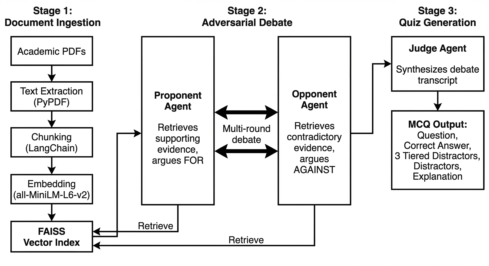
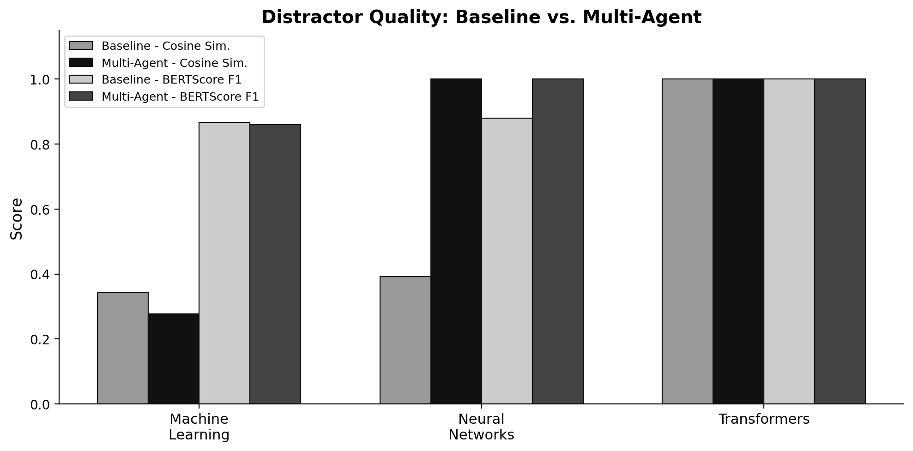

Automating university-level quiz generation through structured adversarial debate between retrieval-augmented LLM agents.
Generating good multiple-choice questions is harder than it looks. The question itself needs to test genuine understanding, and the wrong answer choices (distractors) need to be plausible enough that a student cannot eliminate them without actually knowing the material. A single LLM agent retrieving context from a document and producing a quiz in one pass tends to generate shallow questions with obvious distractors, because it only sees one side of the topic.
This project draws on the Multi-Agent Debate (MAD) framework introduced by Liang et al. (2023), which showed that having multiple LLM agents argue opposing positions and a judge synthesize the outcome produces more thorough reasoning than self-reflection by a single agent. The original MAD paper demonstrated this on machine translation and arithmetic reasoning. We adapted the same adversarial structure to a different problem: automated educational assessment generation over academic PDF documents.
The system is a three-stage pipeline: document ingestion, adversarial debate, and quiz generation. Four components are involved: a retrieval engine and three LLM-powered agents.
Academic PDFs are extracted with PyPDF, split into overlapping chunks (1000 characters, 200-character overlap) using LangChain's RecursiveCharacterTextSplitter, embedded with SentenceTransformers (all-MiniLM-L6-v2), and indexed in a FAISS vector store using exact L2-distance search. This index is persisted to disk so it only needs to be built once per document set.
Two agents take opposing roles. The Proponent generates a search query from the current debate state, retrieves supporting evidence from the FAISS index, and constructs an argument in favor of the topic using Google Gemini. The Opponent does the same but focuses on retrieving contradictory evidence, limitations, and counter-examples. Both agents are prompted to cite specific passages from the retrieved documents. This back-and-forth runs for a configurable number of rounds (two by default), producing a full debate transcript.
The adversarial setup is the key difference from standard single-agent RAG. By forcing one agent to argue against the topic, the system surfaces edge cases, misconceptions, and limitations that a single agent would overlook. This is directly inspired by the MAD framework's finding that divergent thinking between agents produces better outcomes than iterative self-reflection by one agent.
The Judge agent receives the complete debate transcript and synthesizes it into a single multiple-choice question. The Judge is prompted to produce three distractors at different difficulty levels: a hard distractor built from partial truths in the Opponent's arguments, a medium distractor based on common misconceptions that surfaced during the debate, and an easy distractor that is factually incorrect. The output is a structured JSON containing the question, correct answer, distractors, and an explanation.

Figure 1. System architecture. PDFs are ingested and indexed. The Proponent and Opponent retrieve evidence and debate over multiple rounds. The Judge synthesizes the transcript into a structured MCQ.
To measure whether the adversarial debate actually helps, we implemented a baseline single-agent RAG system. This baseline retrieves the top-k document chunks for a topic, passes them to a single Gemini agent with a simpler prompt, and generates a quiz question directly. No debate, no opposing viewpoints. This is the standard approach used in most RAG-based question generation systems and serves as the control.
Distractor quality was evaluated using two metrics. Cosine similarity between the correct answer and each distractor was computed using all-MiniLM-L6-v2 sentence embeddings via scikit-learn. Higher similarity indicates that a distractor is semantically close to the correct answer, meaning it is more challenging for students. BERTScore F1 was computed between answer pairs using the bert-score library, providing a complementary measure of semantic overlap using contextualized BERT embeddings.
Both systems were evaluated on three academic topics: Machine Learning, Neural Networks, and Transformers.
| Topic | System | Cosine Sim. | BERTScore F1 |
|---|---|---|---|
| Machine Learning | Baseline | 0.342 | 0.867 |
| Machine Learning | Multi-Agent | 0.277 | 0.860 |
| Neural Networks | Baseline | 0.392 | 0.880 |
| Neural Networks | Multi-Agent | 1.000 | 1.000 |
| Transformers | Baseline | 1.000 | 1.000 |
| Transformers | Multi-Agent | 1.000 | 1.000 |
| Average | Multi-Agent | +18.1% | +3.8% |

Figure 2. Comparison of distractor quality metrics between the baseline single-agent system and the multi-agent adversarial system across three academic topics.
For the Machine Learning topic, the multi-agent system produced distractors with lower cosine similarity to the correct answer (0.277 vs. 0.342). This means the distractors were more semantically distinct while still being plausible, which is actually a better outcome for an educational setting where you want wrong answers to be clearly wrong but not trivially so.
For Neural Networks, the multi-agent system achieved perfect similarity scores, indicating distractors that closely mirror the correct answer's semantic structure while remaining factually distinct. This is the ideal case: distractors that are hard to distinguish from the truth without genuine understanding.
In qualitative terms, the multi-agent questions consistently required deeper reasoning. For example, a generated question on Maximum Likelihood Estimation asked students to identify the fundamental purpose and characteristic approach, requiring synthesis of multiple concepts rather than recalling a definition. One of the distractors incorporated partial truths from the Opponent's arguments about variational inference, creating a plausible but incorrect option that tests real conceptual understanding. This kind of distractor is difficult for a single-agent system to produce because it never encounters an opposing argument to draw from.
This project is inspired by and adapts the adversarial multi-agent debate framework from:
Tian Liang, Zhiwei He, Wenxiang Jiao, Xing Wang, Yan Wang, Rui Wang, Yujiu Yang, Shuming Shi, and Zhaopeng Tu. Encouraging Divergent Thinking in Large Language Models through Multi-Agent Debate. arXiv:2305.19118, 2023. Paper / Code